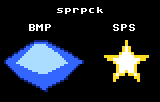

sprpck Users Guide
tools/extern/sprpck. It converts
images into packed Lynx sprite data, and complements the in-tree
sp65 converter by reading input formats sp65 does
not — most usefully Windows BMP files and plain-ASCII
SPS files.1. Overview
sprpck is the sprite/bitmap packer that predates sp65;
it was written for the BLL Lynx development kit and is still the canonical tool
for turning artwork into the Suzy sprite-data format. lynxcc
vendors it verbatim (unmodified, Apache-2.0) as an external tool under
tools/extern/sprpck; see
design/LYNX_EXTERN_TOOLS_DESIGN.md for the vendoring policy and
Licenses for the notice.
It is kept alongside sp65 rather than in place of it because the two tools cover different input formats. sp65 reads only PCX; sprpck reads BMP, PI1 (Atari ST), raw pixel dumps and the human-editable ASCII SPS format, and adds an action point, tiling and a batch mode. Both emit the same packed Suzy sprite data, so the choice is driven by where your art comes from. This page concentrates on the two inputs you are most likely to reach sprpck for: BMP and SPS.
.spr blobs linked in with .incbin.2. Usage
2.1. Command line option overview
Run sprpck with no arguments to print the built-in help:
Usage :
sprpck [-c][-v][-O0][-e#][-s#][-t#][-u][-p#]
[-axxxyyy][-Swwwhhh][-oxxxyyy][-iwwwhhh]
[-rxxxyyy] [-z] in [out]
or
sprpck batchfile
-O0 : do no optimize literal/packed
-e<pen> : compress until color is only <pen>
-c : compress color index
-v : don't be quiet
-s : sprite-depth 4,3,2,1 bit(s) per pixel (4 default)
-t : type 0 = 4bit raw, 1 = 8bit raw, 2 = SPS, 3 = PCX (3 is default)
type 4 = 1bit raw type 5 = PI1 (Atari ST), 6 = MS Windows BMP
-u : unpacked (packed is default)
-p : palette output-format : 0 - C, 1 - ASM, 2 - LYXASS(default)
-axxxyyy : action point (e.g. -a200020)
-Swwwhhh : sprite width and height (input-size is default)
-oxxxyyy : offset in data (e.g. -o010200 )
-iwwwhhh : input size (not needed for PCX)
-rxxxyyy : split picture into yyy * xxx tiles
-z : (only possible with -c) auto-set sprite-depth
in : input data
out : output filename, optional, default is in.spr
2.2. Command line options in detail
All six-digit xxxyyy arguments (-a, -i,
-o, -S, -r) are decimal,
three digits each — e.g. -i016016 is width 16, height 16.
-t<n>-
Input file type.
0= 4-bit raw,1= 8-bit raw,2= SPS,3= PCX (default),4= 1-bit raw,5= PI1 (Atari ST),6= Windows BMP. sprpck does not sniff the extension — state the type explicitly for anything but PCX. -s<n>-
Sprite depth in bits per pixel: 4 (default), 3, 2 or 1. Determines how the pen indices are packed; keep your pen values inside the range the depth allows (0–15 for 4 bpp, down to 0–1 for 1 bpp).
-i<wwwhhh>-
Input width and height. Required for the raw and SPS formats, which carry no dimensions of their own; not needed for BMP/PCX/PI1, which are self-describing.
-u-
Emit an unpacked (literal) sprite. The default is packed (run-length + literal, chosen per run), the same encoding sp65 calls
packed. -c,-z,-e<pen>-
Colour handling.
-ccompacts the pen indices actually used down to a dense range and emits a redirection table;-z(only with-c) then picks the smallest depth that fits;-e<pen>clips a trailing transparent edge pen (like sp65'sshapedmode). -p<n>-
Palette output format:
0= C,1= ASM,2= LYXASS (default). Note:-p0also changes the sprite output — it is written as a cc65-style object (.obj) instead of a raw.spr. That object is the legacy BLL/sendobj format, not an ld65 object, so for linking into a lynxcc program take the raw.spr(any non--p0run) and.incbinit — see 4.1. -a<xxxyyy>-
Action (anchor) point the sprite is painted and scaled around, in pixels.
-r<xxxyyy>,-o<xxxyyy>,-S<wwwhhh>-
Split the input into
xxx×yyytiles, start at a data-offset, or force a sprite-Size smaller than the input. -v-
Verbose: echo the parsed options and, for BMP, dump the decoded file/info header while reading.
A batch file may be given instead of options: each line has the same form as a command line, and an input filename given on one line may be omitted on the following ones.
3. Input formats
sprpck reads several formats (see -t above); the two most useful
in this SDK are BMP and SPS, covered here. In every case the pixel values are
Lynx pen indices, and the packed depth is set by -s.
3.1. BMP
With -t6 sprpck reads an uncompressed (non-RLE) Windows BMP, either
8-bit or 4-bit indexed. This is the in-tree path for art that comes out of a
paint program as BMP, since sp65 reads only PCX. An
ordinary indexed BMP works — for example one saved by PIL:
sprpck -v -t6 -s4 logo.bmp logo.spr
sprpck reads the BMP palette, compacts the pen indices actually used
down to a dense range starting at 0, and writes the matching Lynx
palette to logo.pal (see 4.2). So a source
image drawn with palette slots {0,3,4,5} becomes sprite pens
{0,1,2,3}; program your display palette from the emitted
.pal (or reproduce those first entries by hand) rather than assuming
the original slot numbers survive. Pen 0 is the transparent background of a
TYPE_NORMAL sprite.
3.2. SPS (ASCII)
An SPS file is the simplest possible sprite source: plain
text, one hexadecimal digit per pixel giving that pixel's pen
(0–F), with a space standing in for pen 0. You can author or tweak
a small sprite in any text editor and read it straight back. Convert it with
-t2, and because the file has no header give the dimensions with
-i:
sprpck -t2 -i016016 -s4 icon.sps icon.spr
The 16×16 star used by the example below is
literally typed out (spaces are pen 0, 6 is the gold body,
8 the white highlight):
6
6
686
686
68886
666668888866666
6688888888866
688888886
6888886
6888886
6886886
6866 6686
66 66
6 6
Alignment gotcha: the reader ignores line breaks and simply
streams every non-newline character as a pixel, so the grid is only correct if
every row is exactly the width passed to -i. Pad short rows
out to full width with trailing spaces (they are pen 0); a ragged file
shifts every row after the first. Unlike a BMP, an SPS carries no colours, so no
.pal is written and the pen digits are used verbatim — you
supply the palette in your program.
4. Output
4.1. Sprite data (.spr)
sprpck writes the packed Suzy sprite-data block — the exact bytes an
SCB's data pointer addresses, terminated by a zero offset byte
— as a raw binary .spr (default name in.spr). This
differs from sp65, which can emit a ready-made C array.
The idiomatic way to link a .spr into a lynxcc
program is to embed it with ca65's .incbin
and export a label:
.export _logo_data
.rodata
_logo_data:
.incbin "logo.spr"
and reference it from C as extern const unsigned char logo_data[];,
assigning scb.data = (unsigned char *)logo_data. Because sprpck's
default output is packed, the SCB's SPRCTL1 carries the
PACKED (not LITERAL) bit. See the
Sprites reference for the SCB and how Suzy paints it.
4.2. Palette (.pal)
For the colour-bearing input formats (BMP, PCX, PI1) sprpck also writes a
.pal file holding the Lynx palette (16 green nibbles then 16
blue/red bytes, as gfx_setpalette expects) plus an 8-byte pen
redirection table. The format follows -p: LYXASS by default,
assembler with -p1, or C with -p0. The C form is
directly #include-able:
char logo_redir[]={0x01,0x23,0x45,0x67,0x89,0xAB,0xCD,0xEF};
char logo_pal[]={
0x00,0x02,0x06,0x0D,0x00,0x00,0x00,0x00,0x00,0x00,0x00,0x00,0x00,0x00,0x00,0x00,
0x00,0x71,0xF3,0xFA,0x00,0x00,0x00,0x00,0x00,0x00,0x00,0x00,0x00,0x00,0x00,0x00};
Remember the caveat: passing -p0 to get
the C palette also flips the sprite output from .spr to a legacy
.obj. To get both a linkable .spr and a C palette, run
sprpck twice (once without -p0 for the sprite, once with it for the
palette), or just program the palette from the values shown.
5. Worked example
The sprpcktest sample packs one sprite
from each format and draws them side by side. Its build wires sprpck into the
examples Makefile:
sprpck -t6 -s4 logo.bmp logo.spr # BMP -> packed 4bpp sprite
sprpck -t2 -i016016 -s4 icon.sps icon.spr # SPS -> packed 4bpp sprite
Both .spr blobs are embedded by suzy/sprpcktest/sprpckdata.s
with .incbin (assembled with --bin-include-dir . so
the generated files are found beside it) and drawn through one SCB with a shared
palette — the crystal in the BMP's compacted pens 1–3, the star in
its SPS pens 6 and 8:

logo.bmp packed with -t6. Right: icon.sps packed with -t2. Both are ordinary packed Lynx sprites once converted.6. sprpck versus sp65
The two converters produce the same kind of packed Lynx sprite; pick by input format and workflow.
| sp65 | sprpck | |
|---|---|---|
| Input formats | PCX only | BMP, SPS, PI1, raw dumps (no PCX-only limit) |
| Sprite output | C, assembler or binary, chosen per --write | raw binary .spr (or legacy .obj with -p0) |
| Linking | #include the emitted C header | .incbin the .spr |
| Encodings | literal, packed, shaped | packed (default) or unpacked (-u); edge clip via -e |
| Sprite sheets | --sprite-sheet / --slice drivers | -r tiling |
| Extras | Lynx-focused, part of the cc65 suite | action point, batch mode, LYXASS palette; vendored, unmodified |
| Provenance | MPL-2.0 fork of cc65 | Apache-2.0, external (tools/extern/sprpck) |
In short: reach for sp65 when your art is PCX and you want a C array dropped straight into the build; reach for sprpck when the art is a BMP, when you want to hand-write a small sprite as ASCII, or when you need its action point / batch features.
7. Copyright
sprpck is (C) Copyright 1997–2021 42Bastian Schick and contributors (Matthias Domin, Karri Kaksonen, LordKraken), licensed under the Apache License 2.0. It is vendored into lynxcc unmodified. The full licence text, together with every other copyright notice in the distribution, is on the consolidated Licenses and copyright notices page.